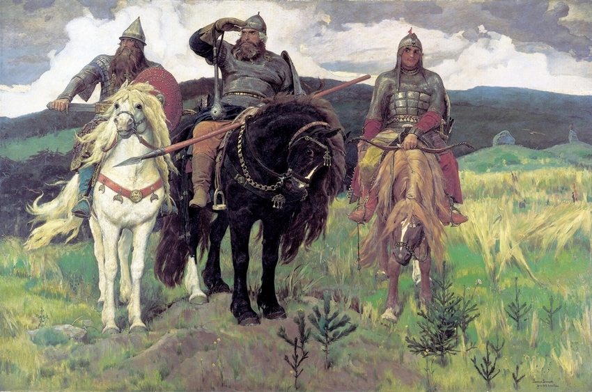
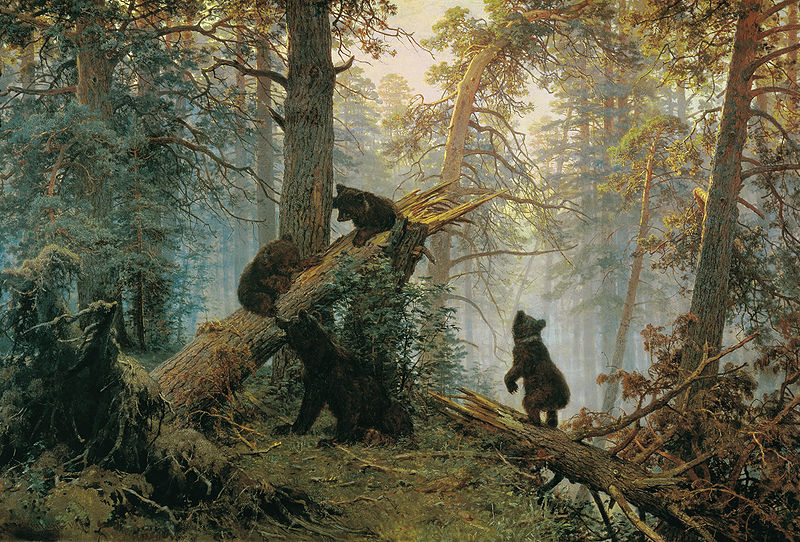
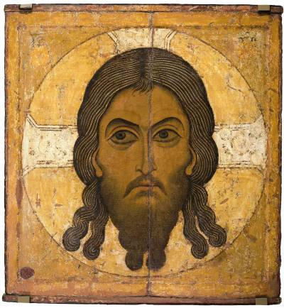
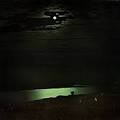
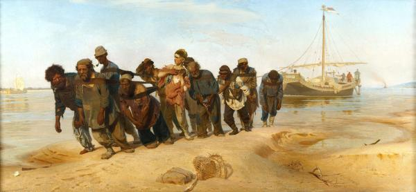
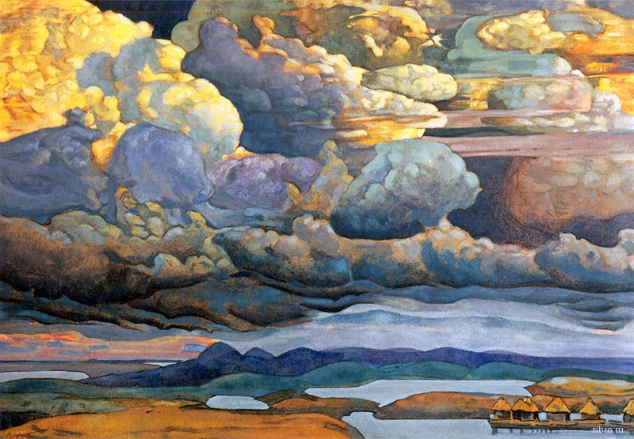

Известные шедевры Третьяковской галереи. г. Москва
Художник 1
"Богатыри" 1898 г.

Основная тема эпического полотна Виктора Васнецова – богатыри-воины, стоящие на
защите
рубежей родины. С 1871 года, когда был сделан первый карандашный эскиз картины,
художник, по его словам, не переставал думать о произведении, считая его
исполнение
своим «творческим долгом, обязательством перед родным народом».
Художник 2
"Утро в сосновом лесу" 1889 г.

Замысел, пожалуй, самого известного пейзажа Ивану Шишкину подсказал художник
Константин
Савицкий. Он же помог Шишкину с написанием самих медвежат: Шишкин, хотя и был
«мастером
леса» и безукоризненно разбирался в мельчайших деталях флоры, нечасто помещал на
свои
полотна животных.
Художник 3
"Спас Нерукотворный. Прослвление Креста"
Двусторонняя икона
вт.пол.XII века

В православной церкви образ Спаса Нерукотворного считается одним из наиболее
известных и
почитаемых. Спас на убрусе (на плате), Нерукотворный образ Иисуса Христа, Мандилион
—
эти названия относятся к первой иконе Спасителя, представляющей Его лик на ткани
(убрусе) или чрепии (черепице).
Жемчужины Государственного Русского Музея. г.Санкт-Петербург
Архип Иванович Куинджи
"Лунная ночь на Днепре" 1880 г.

Илья Ефимович Репин
"Бурлаки на Волге" 1880 г.

Николай Константинович Рерих
"Небесный бой" 1912 г.

Важные экспонаты Государственного исторического музея. г.Москва